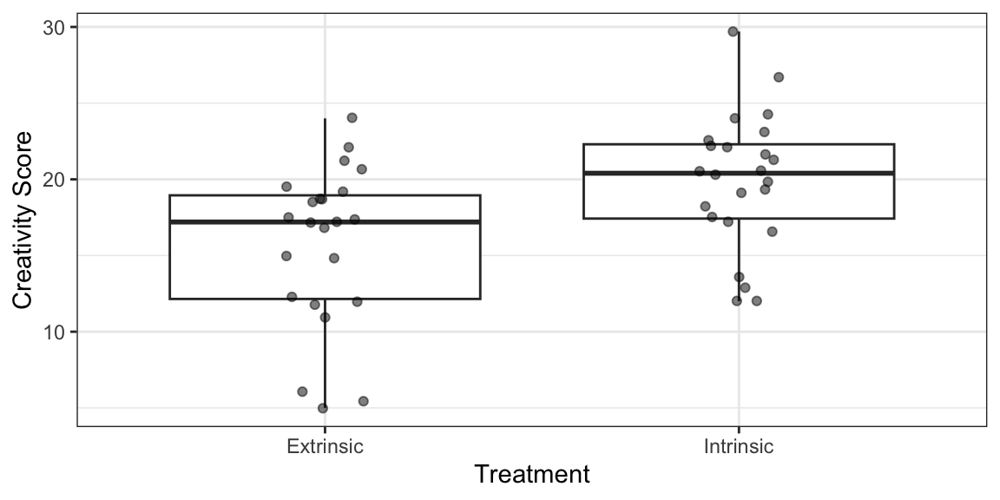

library(Sleuth3)
library(tidyverse)
library(broom)
data("case0101")
ggplot(case0101, aes(x = Treatment, y = Score)) +
geom_boxplot(coef = Inf) +
geom_jitter(width = 0.1, alpha = 1/2) +
xlab("Treatment") +
ylab("Creativity Score")